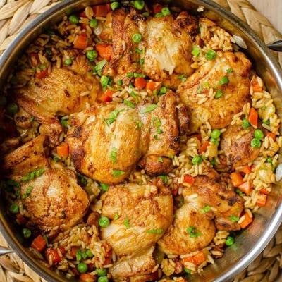

Projects
Recipes
Contact
One Pot Chicken & Rice

A tasty chicken dish to feed 4 in under an hour, using only one pan.
Serves 4 | Takes 50 mins
Original recipe:
https://www.bbcgoodfood.com/recipes/one-pot-chicken-rice
main
meat
Ingredients
1 tbsp smoked paprika
1 tsp dried oregano or thyme
1 tbsp ground coriander
2 cloves garlic
2 bay leaves (optional)
2 tsp cooking oil
600g boneless & skinless chicken thighs
700ml hot bouillon
250g easy-cook brown rice
320g leeks, sliced
320g mixed frozen vegetables
Method
Put the spices, garlic, & oil in a large bowl and mix well. Add the chicken and coat it in the mixture.
Heat a large lidded pan, and fry the chicken uncovered for 5 mins until browned, turning halfay to brown both sides.
Remove the browned chicken and leave on a plate to the side.
Pour the boillon into the pan, stirring well to lift anything stuck to the base of the pan, then stir in the rice, leeks, oregano or thyme, and bay.
Lay the chicken on top, cover with the lid, and bring to the boil, then simmer for 20 mins.
Stir in the frozen vegetables, then cover and simmer for 5 minuets, to heat through.
Leave to stand for 5-10 mins, then lightly mix and serve.